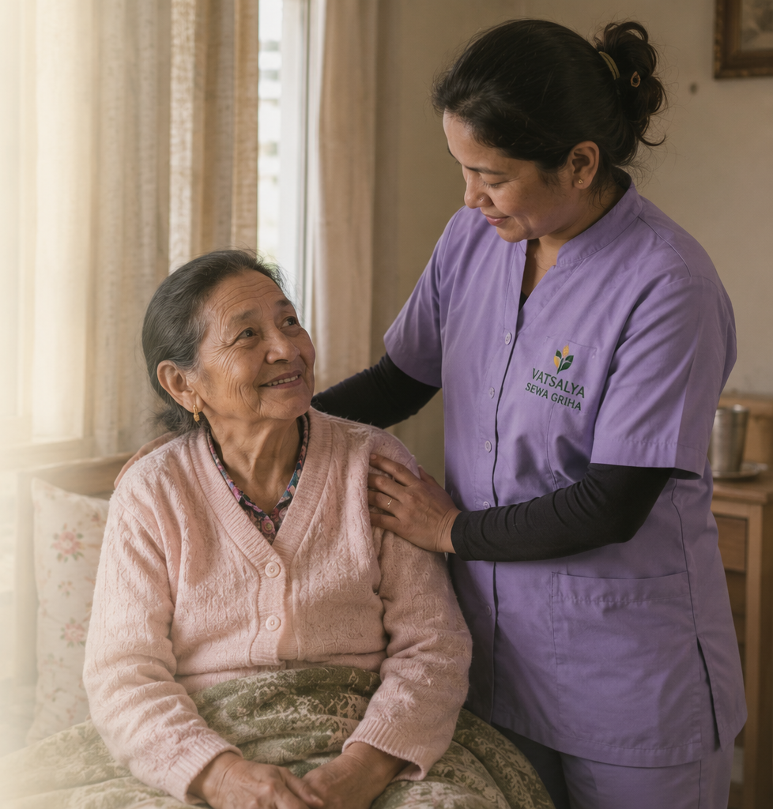
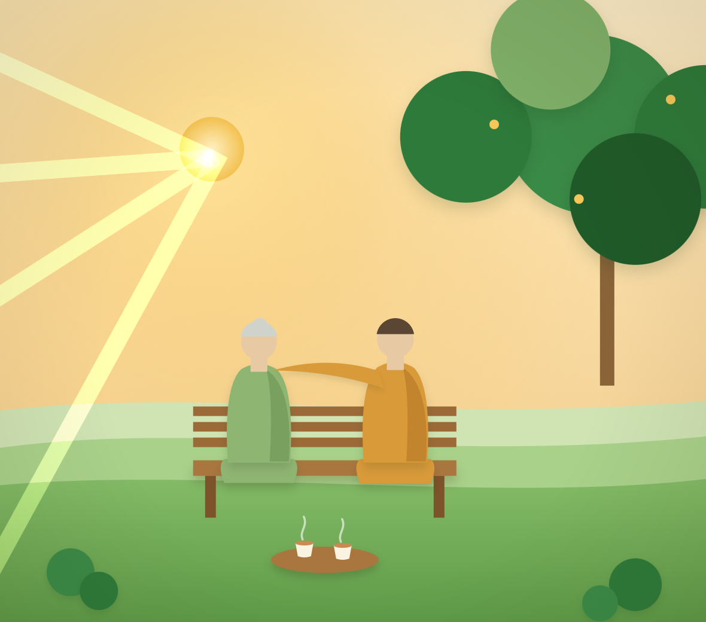
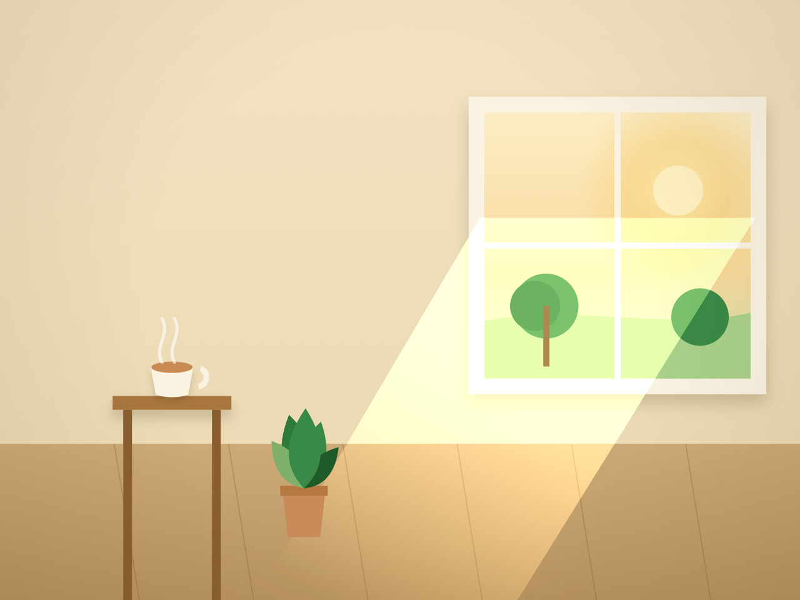

Where care meets joy
Vatsalya Sewa Griha
A trusted daycare for seniors.
Where care meets joy
A trusted daycare for seniors.
Vatsalya is a real home in Kumaripati, Lalitpur. Not a ward, not a waiting room. A house where aama and buwa wake to chai and the morning paper, and fall asleep knowing someone is near.
With care, the Vatsalya family

Morning
बिहानको चिया
The day starts together. Hot tea, the morning news, and friends to share it with before anything else.
Midday
दालभात, सँगै
Fresh, home-cooked Nepali food at a shared table. The kind of meal that tastes like someone made it just for you.
Afternoon
गीत र हाँसो
Gentle movement and a lot of laughter. Afternoons here are active and social, never long and empty.
Through the night
सुरक्षित रात
Health checks, gentle care and someone close by, all night. Safe in the dark hours too, so you can rest as well.

“The best part of my day is the morning chai. We sit, we talk, we laugh. It does not feel like a long day anymore.”

Every caregiver is chosen for warmth first, then trained to look after your parents gently and safely.
We learn their routine, their tastes, their health. Their days are built around them, not around a schedule.
We keep you updated, and you are welcome to call or visit any day. No fixed hours, no barriers.
No jargon, no surprises. We tell you everything simply and truthfully, the way family should.
Four words guide every small choice we make here. Hover over each to hear what it means to us.
We care with empathy and patience, treating every member the way we would want our own parents to be treated.
My father has never been happier. The staff treat him like family, and he has made so many new friends.
“Knowing my father is safe and surrounded by loving people gives our family real peace of mind.”
“It feels like home here. Laughter, good food, and people who truly care.”
Read our story, our values and the family who would care for your parents. Or just call, and we'll tell you everything.